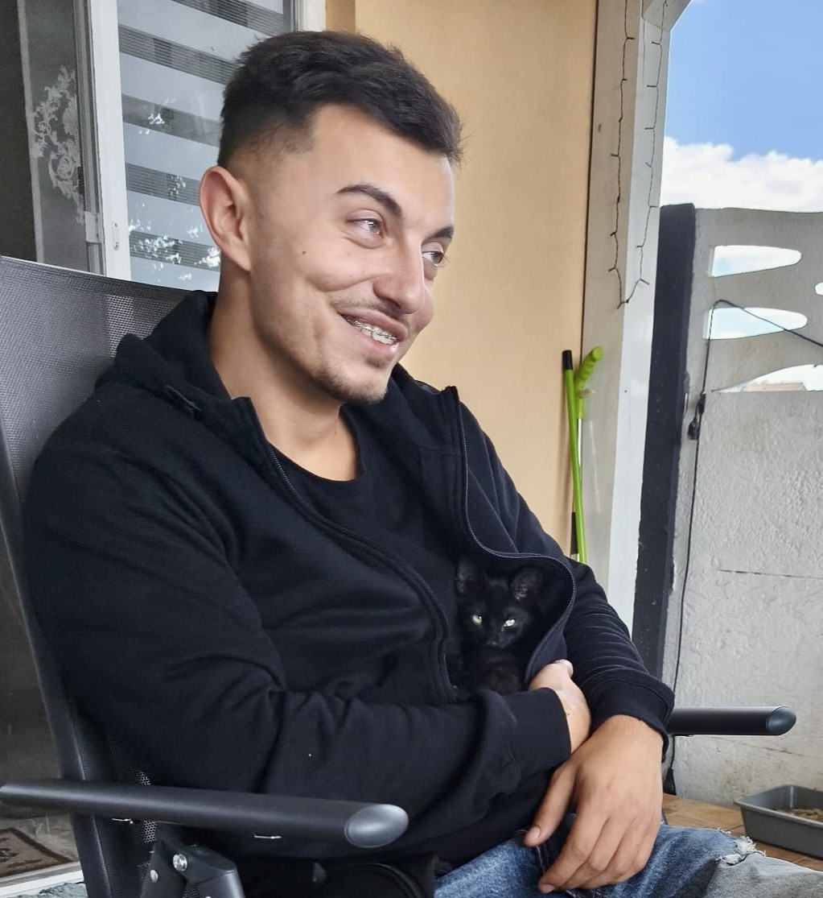

Hello, my name is Ewald Cheveresan and below you will find my resume

Short Summary:
I’m a passionate and adaptable engineer with a solid foundation in both Mechanical Engineering and Informatics, combining the physical precision of automotive systems with the logic and flexibility of software development.
My career began as a Service Counselor at Quark Motors Arad, where I was responsible for managing client interactions, coordinating service schedules, and overseeing leasing fleet operations. This role sharpened my organizational and communication abilities in a fast-paced, customer-focused environment.
I then advanced to Technical Counselor at Autonom, where I conducted technical evaluations, coordinated vehicle maintenance, and ensured fleet performance met high standards. This position developed my technical judgment, reliability, and ability to manage logistics efficiently.
Currently, I work as a Harness Design Engineer at Leoni, where I design, validate, and optimize automotive wiring harnesses for global OEMs. I collaborate across departments and engineering domains to ensure our harness systems meet strict functional, quality, and safety standards. I enjoy the mix of technical detail and collaborative design thinking that this role requires.
Education:
Aurel Vlaicu University Arad
Faculty of Exact Sciences
Master's Degree in Advanced Studies of Informatics, English-Taught Program
From Oct.25-Ongoing
Aurel Vlaicu University Arad
Faculty of Exact Sciences
Bachelor's Degree in Studies of Informatics, English-Taught Program
From Sept.22-Jul.2025
Aurel Vlaicu University Arad
Faculty of Engineering
Bachelor's Degree in Automotive Engineering
From Sept.18-July.22
National High School of Computer Science, Arad
Faculty of Exact Sciences
Computer Systems Technician
From Sept.14-Sept.18
Developed strong knowledge of products and services to offer tailored recommendations.
Acted as a brand ambassador, upholding company values in all interactions.
Prepared contracts, cost estimates, and managed client requests.
Accurately entered and verified client data using specialized software.
Created technical proposals and quotations aligned with company policies.
Maintained long-term client relationships, ensuring satisfaction and trust.
Ensured compliance with quality standards and participated in audits.
Collaborated with technical, logistics, and administrative teams to improve workflows.
Consulted clients in-person, by phone, and email to resolve service issues and schedule appointments.
Skills
Communication skills
Excellent client-facing communication skills developed through car rental services, providing tailored information and handling customer needs from first contact to vehicle return
Clear and persuasive technical communication honed while delivering detailed explanations of vehicle options, rental conditions, and services to a diverse clientele
Confident written communication built through project documentation, cost reports, and technical proposals in harness design and costing
Strong cross-functional communication skills acquired from collaborating with suppliers, team members, and clients to ensure seamless operations and timely problem-solving
Effective verbal communication sharpened through direct interaction with clients and colleagues during engineering project planning and execution
Skilled in adapting communication style to suit both technical audiences (design reviews, engineering teams) and non-technical stakeholders (customers, support staff)
Team-based communication abilities developed through collaborative academic projects and software development sprints, including code reviews and brainstorming sessions
Ability to simplify complex concepts—gained by explaining design, costing, or rental logistics in an easy-to-understand manner tailored to each person’s background
Organisational / managerial skills
Time and task management skills developed while handling daily operations and client requests in a fast-paced environment.
Coordinated group projects during engineering and IT studies, ensuring timely delivery of technical and software solutions
Experience prioritizing multiple tasks, balancing administrative work with customer service responsibilities
Organized documentation and fleet records, contributing to the smooth internal workflow of the agency
Familiar with project planning tools and cost estimation from design and costing work in engineering roles
Job-related skills
Good command of cost estimation and budgeting techniques acquired during harness design and costing tasks at Leoni Wiring Systems
Skilled in interpreting and creating technical drawings using CAD software, developed through academic projects and daily work as a design engineer
Familiarity with quality control checks and validation processes from hands-on engineering and testing tasks
Basic diagnostic and evaluation skills of mechanical and automotive systems, gained during bachelor's degree in engineering
Solid understanding of IT systems and databases, acquired during Informatics studies and software development projects
Computer skills
Excellent command of Microsoft Office™ tools (Word, Excel, PowerPoint), used regularly for documentation, costing, and reporting tasks
Proficient in 2D CAD design tools, especially Siemens Capital HarnessXC, Costing, Project, Library applied in daily work for automotive wiring design
Experience with software development environments (VS Code, Git), gained during Informatics studies and programming projects
Familiar with databases (SQL basics) and web technologies (HTML, CSS, JavaScript), through academic coursework and personal projects
Basic knowledge of networking and system operations, introduced during IT and electronics training
Other skills
Technical drawing and sketching, developed through mechanical engineering coursework and hands-on design exercises
Basic soldering and electronics assembly, practiced during IT and electronics training
Cost estimation and calculation, gained from current role in automotive harness design project
Multilingual communication (Romanian, English), used in academic and professional settings
Presentation and public speaking, improved through project defences and business trips.